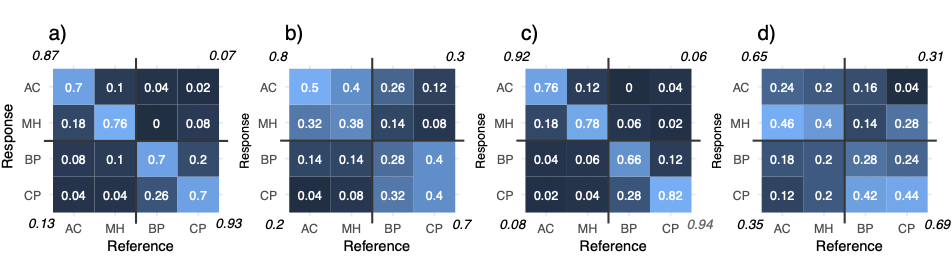
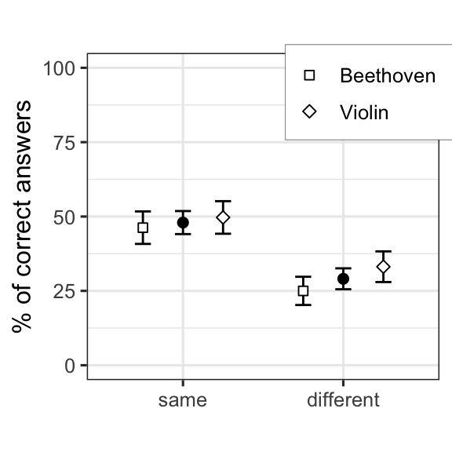

On the recognition of concert halls by room acoustics - Results of the first online listening experiment.
(NOTE: THERE IS NOW A SECOND VERSION OF THIS ONLINE LISTENING EXPERIMENT.)
Last September (2020) we published the article “Recognizing individual concert halls is difficult when listening to the acoustics with different musical passages”. The title already tells a lot of this experiment, where the subjects were required to recognize halls just by listening to the room acoustics, but so that the sounds (i.e. excitations) were either exactly the same or different. The sound materials included an excerpt of a Beethoven symphony, and short samples of a single violin (see the article for more details).
The following figures summarise the main results presented in the article:
FIG. 6. Overall results: The mean proportion of correct answers with confidence intervals derived from the binomial distribution with normal approxi- mation. Data are pooled over all individuals and each observation is treated as an independent binary (correct/incorrect) observation.
 FIG. 7. Confusion matrices (or “error” matrices) where each cell depicts the proportions (between 0 and 1) of responses given in the matching task. For example, in (a) whenever a reference auralization corresponded to AC, 70% of the responses were correct, while in 18% the response was incor- rectly MH. The values in the corners present the results of the reclassification of the correct responses with horizontal and vertical lines across the matrices indicating the grouping (i.e., AC–MH vs BP–CP, see text for details). (a) Beethoven “same” condition; (b) Beethoven “different” condition; (c) violin “same” condition; (d) violin “different” condition. Color range is scaled from 0 (dark blue) to 1 (white).
In any case, the story is that for this work I also experimented with RShiny to see if it can be used for making online listening experiments. Originally the idea was only to facilitate the review process, so that, the reviewers could go and have a listen for themselves. Here is link to this online test.
The online test was basically a copy of the live experiment (with some number of extra unknown variables), but unfortunately, i feel that it was excessively long to be directly transferred online. I suspect that there have been quite a lot of people who may have started the test but never completed. But I am happy to note that there are now as much as 40 people who have taken the time and completed. This amounts to a dataset, that can be summarized as follows:
# First remove variables from workspace
rm(list = ls())
# and read the data.table:
chm_df <- read.table("RSHINYresults.txt", sep = ",", header = T,stringsAsFactors = T)
summary(chm_df)## SUB_ID ORD CASE_ID SOUNDTYPE SOUNDNUM
## 4GwhMP : 32 Min. : 1.00 Min. : 1.00 INSTR:640 Min. : 0.00
## 56IycUX: 32 1st Qu.: 8.75 1st Qu.: 8.75 MUSIC:640 1st Qu.: 0.00
## 5QG : 32 Median :16.50 Median :16.50 Median : 0.50
## 5WsqUN : 32 Mean :16.50 Mean :16.50 Mean : 4.25
## HAYtW : 32 3rd Qu.:24.25 3rd Qu.:24.25 3rd Qu.: 8.25
## HKzhS7 : 32 Max. :32.00 Max. :32.00 Max. :16.00
## (Other):1088
## SAMEDIFF MUS_REF MUS_COM REF A B C
## diff:640 BEE1 :320 BEE1 :320 AC:320 AC:301 AC:322 AC:317
## same:640 BEE2 :320 BEE2 :320 BP:320 BP:325 BP:307 BP:318
## viulut:640 viulut :320 CP:320 CP:347 CP:299 CP:327
## viulut2:320 MH:320 MH:307 MH:352 MH:318
##
##
##
## D ANS CORRECT TIME COMPLETED
## AC:340 AC:304 Min. :0.0000 2020-11-02 11:28:29: 1 Min. :0
## BP:330 BP:339 1st Qu.:0.0000 2020-11-02 11:31:09: 1 1st Qu.:0
## CP:307 CP:350 Median :0.0000 2020-11-02 11:32:28: 1 Median :0
## MH:303 MH:287 Mean :0.3852 2020-11-02 11:33:53: 1 Mean :0
## 3rd Qu.:1.0000 2020-11-02 11:35:16: 1 3rd Qu.:0
## Max. :1.0000 2020-11-02 11:35:49: 1 Max. :0
## (Other) :1274
## REP EXPERTICE HEADPHONE
## Min. :0.00 experienced:512 AKG 240DF : 32
## 1st Qu.:0.75 expert :192 AKG K240 Studio: 32
## Median :1.00 none : 96 AKG K501 : 32
## Mean :0.75 novice :416 AKG801 : 32
## 3rd Qu.:1.00 NA's : 64 AirPod Pro : 32
## Max. :1.00 (Other) :800
## NA's :320(You can download this dataset here .)
In total we have now 1280 data points, and I think this is fair amount of data to skim through. Note, that analyzing this type if data in R was already discussed in the previous post, so here, I will just cover the main results of the online listening experiment.
So, here are the results (in the similar figures as in the article): 
So, basically these results follow those presented in the article, but they are much worse. As mentioned, the test was relatively long to be performed online, so I suspect that these results are affected by the length of the experiment. Of course there is also the fact that the stimuli in the online test were binaural auralizations while the main experiment was carried out in the multichannel anechoic listening chamber at the Aalto Acoustics Lab. The multichannel chamber and the reproduction setup is critical when it comes to perceptually analysing small changes in the sound, and when listening to these samples myself, I can say that the binaural stimuli makes the task that more difficult.
Nevertheless, these results are in line with the article, and indicate that the recognition task was much more difficult when the sounds were different, than when they were the same. This can also be quantified with the binomial tests. (We make the assumption that all trials are independent, which is perhaps not strictly true.)
Exact binomial test for the “same”-condition:
##
## Exact binomial test
##
## data: same_corn and same_totn
## number of successes = 307, number of trials = 640, p-value < 2.2e-16
## alternative hypothesis: true probability of success is greater than 0.25
## 95 percent confidence interval:
## 0.4465431 1.0000000
## sample estimates:
## probability of success
## 0.4796875Exact binomial test for the “diff”-condition:
##
## Exact binomial test
##
## data: diff_corn and diff_totn
## number of successes = 186, number of trials = 640, p-value = 0.01081
## alternative hypothesis: true probability of success is greater than 0.25
## 95 percent confidence interval:
## 0.2610833 1.0000000
## sample estimates:
## probability of success
## 0.290625These results show clearly that people could recognize the halls above the level of chance (i.e., 1/4) in the “same” -condition. In the “diff”-condition, the result is still significant with p-value of 0.01, so it seems not to be totally random and people could perhaps tease out the correct hall, but not very consistently. Looking at the figures, there also seems to be a small difference between the Beethoven and violin in the “diff”-conditions.
The contrast between the “same” and “diff” conditions is perhaps self-evident, but we can still verify it by testing whether the two proportions are equal or not. We use the Chi-Squared test for two proportions:
##
## 2-sample test for given proportions with continuity correction
##
## data: c(same_corn, diff_corn) out of c(same_totn, diff_totn), null probabilities c(1/4, 1/4)
## X-squared = 184.27, df = 2, p-value < 2.2e-16
## alternative hypothesis: two.sided
## null values:
## prop 1 prop 2
## 0.25 0.25
## sample estimates:
## prop 1 prop 2
## 0.4796875 0.2906250As mentioned, this online experiment was excessively long, so I don’t continue with any further analyses here.
You can download this dataset here if you want to take a closer look.
Finally, I am still continuing this research with another experiment, that includes another set of sounds and is now considerably shorter. Please participate!.
Leave a comment:
Antti Kuusinen
Senior Researcher
My research interests include (but are not restricted to) the human perception of speech, music and noise in reverberant spaces.